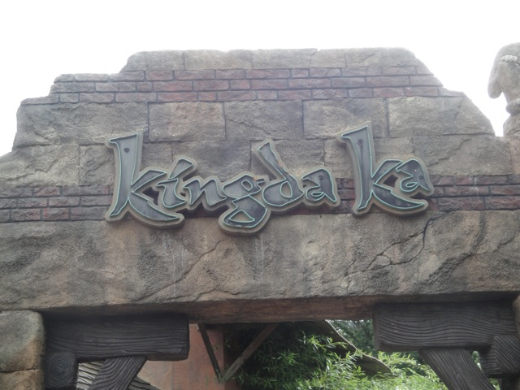

| |
Kingda Ka Review

We're here at Six Flags Great Adventure. After getting in the seats and pulling down the unnecesarry OTSRs (I really wish Six Flags Great Adventure would get rid of the damn things and just run it with lap bars like Top Thrill Dragster), you pull out into the launching area. You then roll up and stop. We see the train in front of us launch and head up the tower. And yeah. It's big. Tallest roller coaster in the world and the 2nd faster roller coaster in the world (I want to go to Ferrari World soon). After the earlier car heads down the first drop, we move up and stop. We keep hearing announcements thanking us for visiting the park, riding Kingda Ka, and get a reminder to keep our arms down. Once again, such a warning is completely useless as we're just gonna raise our arms immidietly once we launch, but at least they don't repeat it over and over and over and over again like they do on Top Thrill Dragster. Arms down. Arms down. Arms down. Arms down. Arms down. SHUT UP!!! Anyways, we launch. Again, not the most intense launch in the world, but it's still a good launch. The Kingda Ka launch is interesting for a couple reasons. It's almost like it has two launches back to back. You launch once, you're going fast, and when it feels like friction is about to slow you down, you get another kick and go even faster until you're reaching 128 mph. Then you RISE up into the sky. Now there's no need to gawk over the view. It's just New Jersey, so the view is pretty much sh*t. But then you get yanked out of your seat and thrown into a downward spiral 400 feet to the ground. Now this right here is my favorite part of the ride. The drop is fantastic! I personally love the airtime you get going into the spiral. Now you may not get airtime depending on the weight of the train and how fast you are going at the top, but I got airtime on both of my rides. After falling to the ground, you rise up into a big camelback hill. Sadly, there's no airtime here or anything like it. The hill mainly functions as a brake run. No airtime, no sense of speed, just brake run, slowing down the entire way. And that's Kingda Ka. You all know that I'm no fan of the way the Discovery/Travel Channel and the General Public treat the ride and disagree with the whole montra of "ZOMG!!! TALLEST ROLLER COASTER IN THE WORLD!!! IT'S SO CRAZY!!!" But despite what you may think, I'm one of the pro-Kingda Ka enthusiasts. I know several of my friends HATE Kingda Ka and claim it to be a rough peice of sh*t. Yeah, it rattles a little and Top Thrill Dragster is better, but come on. I still found it to be a fun ride. So I'd recommend riding it at Six Flags Great Adventure, provided that you have a Gold Flash Pass, or somehow the line is short. Don't wait too long and waste valuable El Toro time here, and keep in mind that the operations are now terrible thanks to Zumanjaro, but hey. It's a fun ride.
8/10
Location: Six Flags Great Adventure
Opened: 2005
Built by: Intamin
Last Ridden: August 4, 2011
Kingda Ka Photos



|